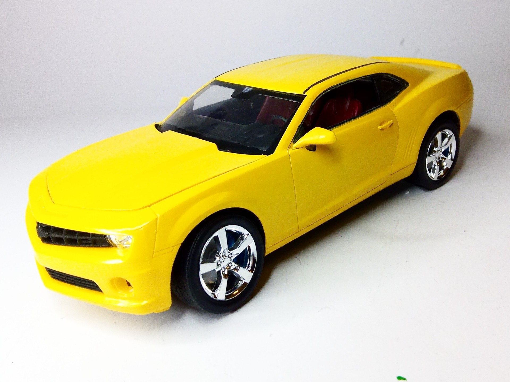
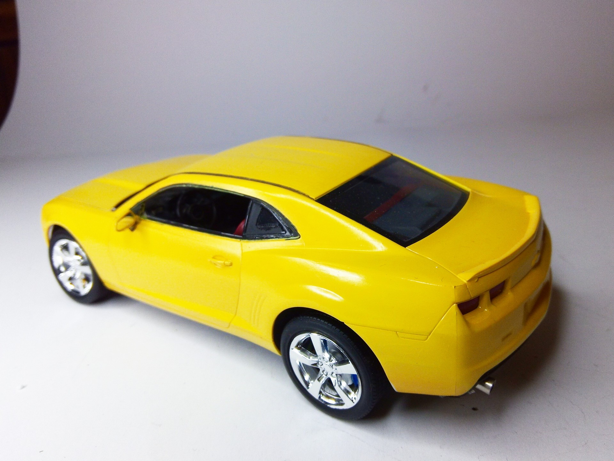

Auto e veicoli stradali · scale model archive
Chevrolet Camaro SS
Chevrolet Camaro SS — Kit: Revell, Scale: 1/24. Modell year 2010. Attractive retro look #1/24 #Revell #Camaro

Photo gallery

English description
Modell year 2010. Attractive retro look
#1/24 #Revell #Camaro
Descrizione italiana
Model year 2010. Attraente aspetto rétro.